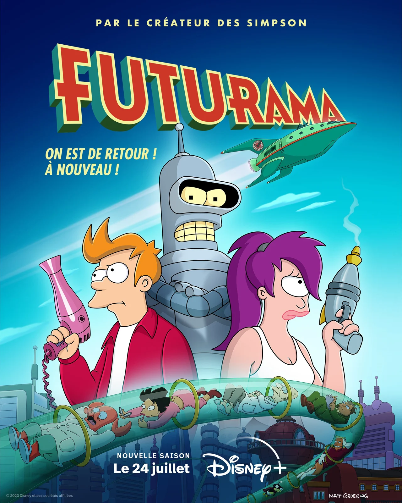
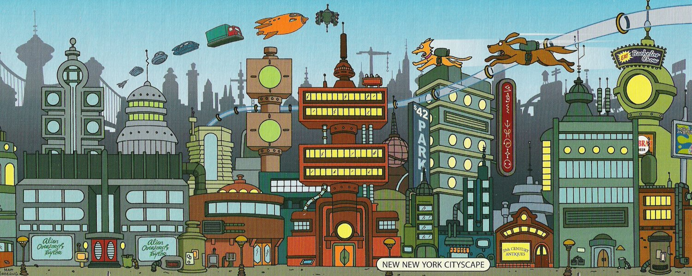

As aventuras de Fry, um entregador de pizzas que foi acidentalmente congelado e acorda mil anos depois. Ele é acolhido por seu único descendente, um cientista idoso e confuso que possui um pequeno serviço de entrega.
Futurama é ambientada na cidade de Nova Nova York na virada do século XXXI, em uma época repleta de maravilhas tecnológicas. O local foi construído sobre as ruínas da atual Nova York, chamada na série de "Velha Nova York"
